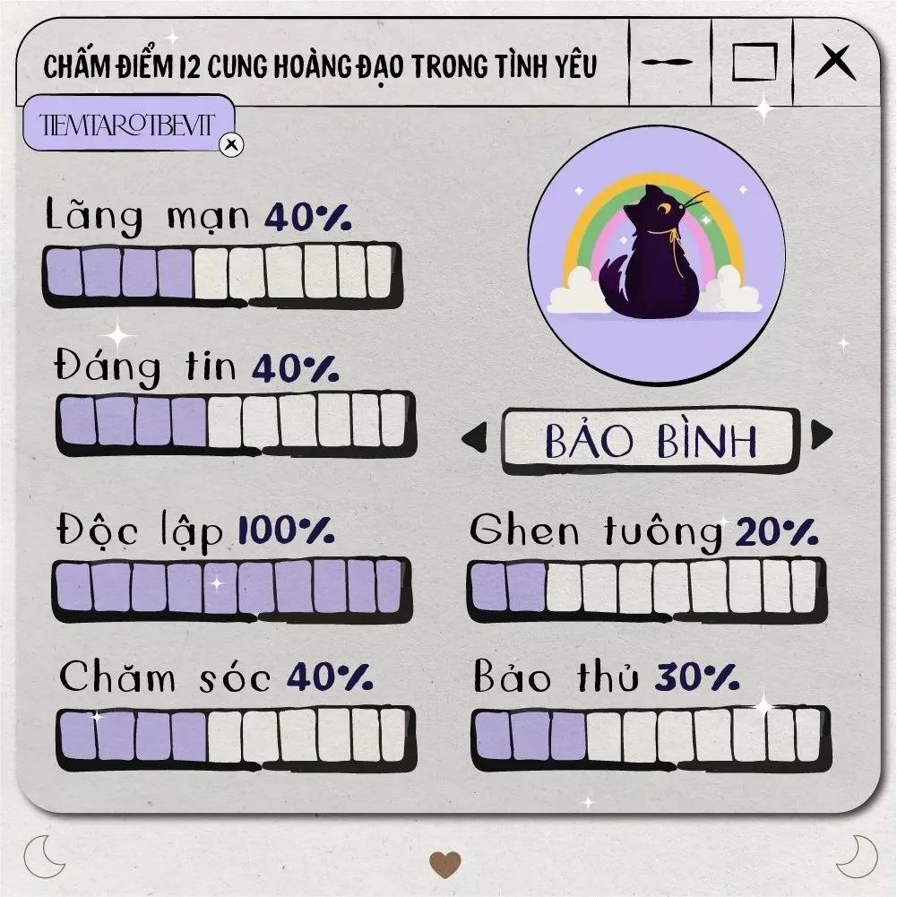

- Người thuộc cung Bảo Bình là những người thông minh, trung thực và giao tiếp khéo léo. Họ có một tâm hồn tự do và luôn muốn khám phá thế giới xung quanh. Họ không thích bị ràng buộc bởi những quy tắc hay truyền thống mà luôn theo đuổi những gì họ tin là đúng. Họ cũng rất có tài giao tiếp và có nhiều bạn bè ở nhiều nơi.
- Người thuộc cung Bảo Bình có một trí óc sắc bén và luôn tìm kiếm những kiến thức mới. Họ biết cách làm việc nhóm và có tầm nhìn xa. Họ cũng không ngại thử thách hay đổi mới, mà luôn sẵn sàng học hỏi và thích ứng.
- Người thuộc cung Bảo Bình là người bạn đời lý tưởng, vì họ biết lắng nghe, chia sẻ và tôn trọng đối phương. Họ cũng rất chung thủy và trân trọng mối quan hệ bền vững. Họ không dễ dàng yêu nhưng khi đã yêu thì họ sẽ yêu hết lòng.
